Project: A platform to distribute photos from heads-up display device straight to WordPress.
My role: UX | UI Design, Logo and Branding, Concept work
Where and when: Silica Labs Software Corp | September 2013 - October 2013
A Google Glass application that shares photos directly to WordPress. Users can take pictures with Glass, caption them, and send them directly to their WordPress blog with just a few taps.
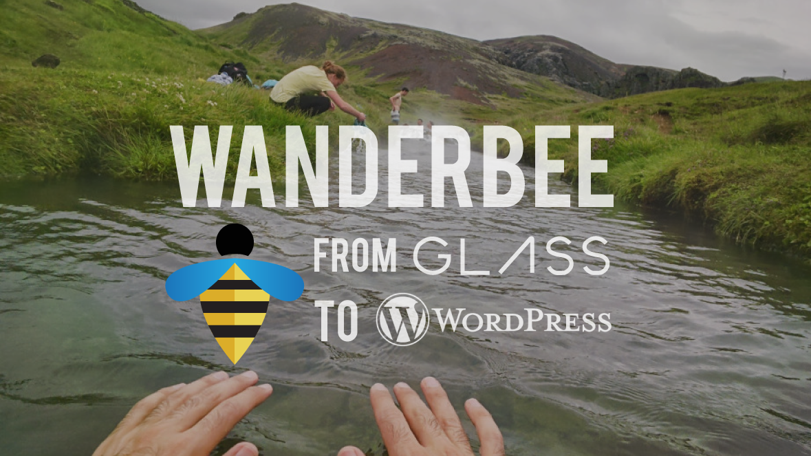One unique feature about Glass was the feature to take photos with great quality while being hands-free, a compelling use case for travelers. We saw a great opportunity to create the Wanderbee app which integrated WordPress and Google Glass.
The UX flow can be described in 3 steps:
To represent Wanderbee, we wanted a brand that could be a traveler's friendly companion when taking photos around the world. For the logo, I chose a bright and playful color palette inspired by wandering bumblebees.
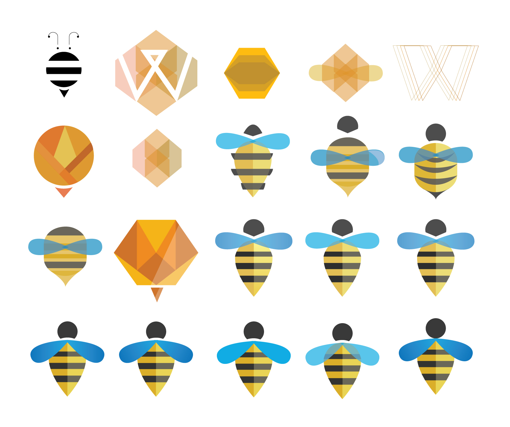 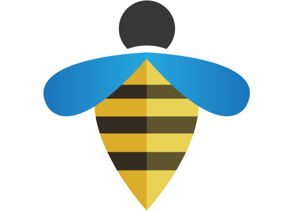National Geographic had expressed interest in this app since they have full-time travelers who hike, ski and adventure around the world. Using Google Glass was a compelling way to offer a creative outlet for their photographers. Before the meeting, we created mockups of possible mobile desktop and mobile versions. The goal was to give viewers the chance to see the beautiful photos along with the geotagged location of where they were on a map. For a variety of reasons, this concept was not brought to fruition.
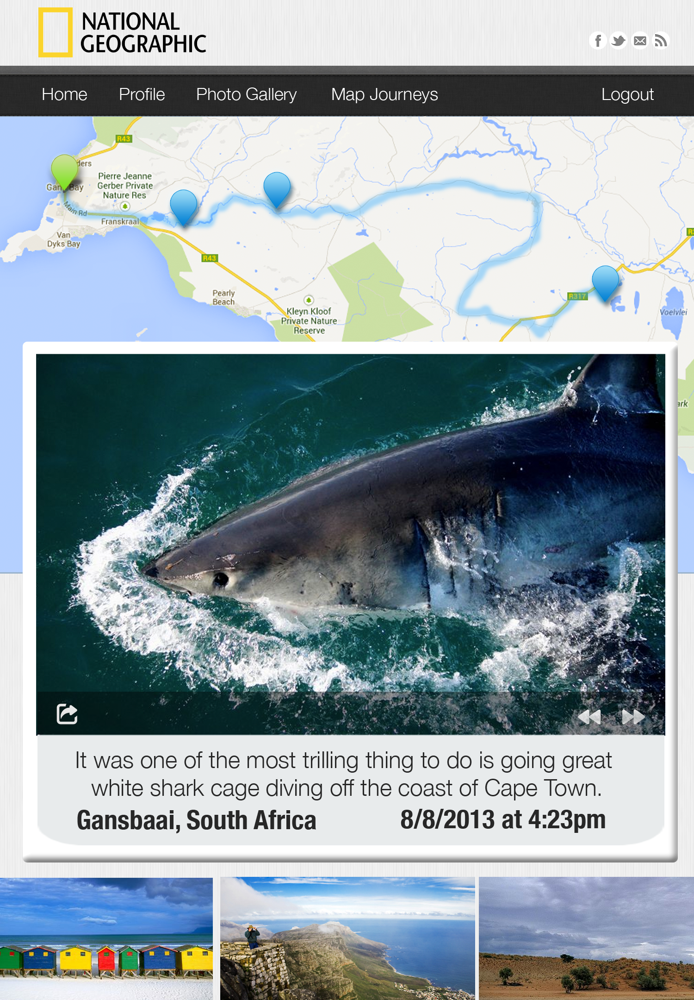 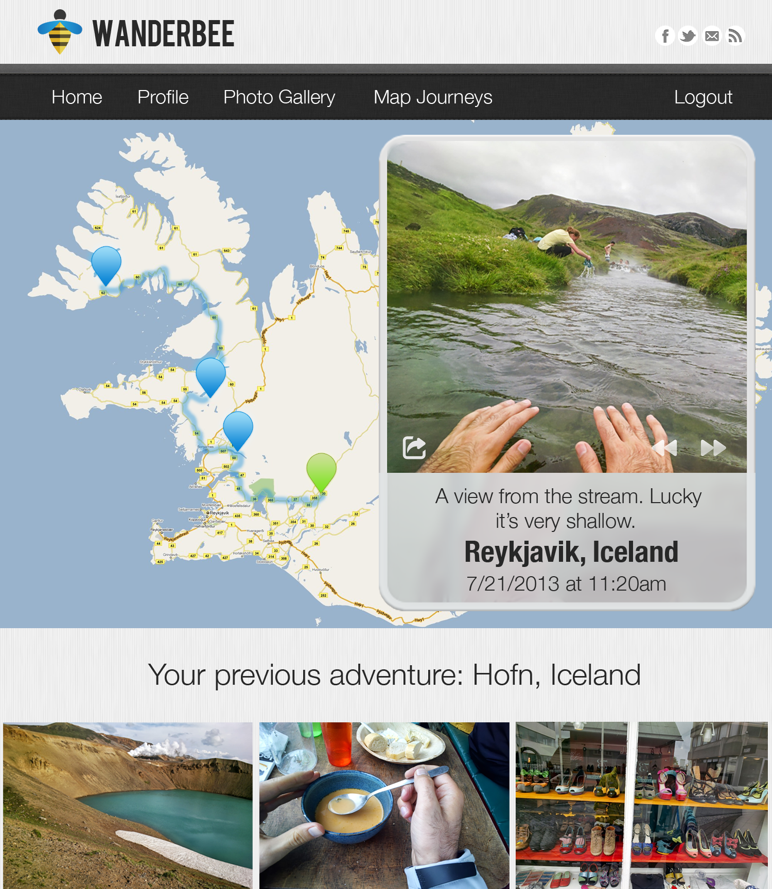After deploying Wanderbee for Google Glass, dozens of users from around the world took photos and published them to their WordPress blog. Here are a few photos in action.
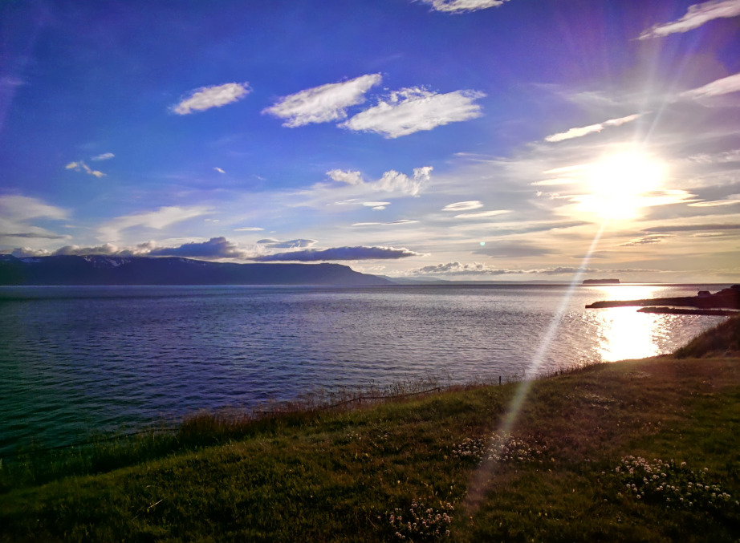 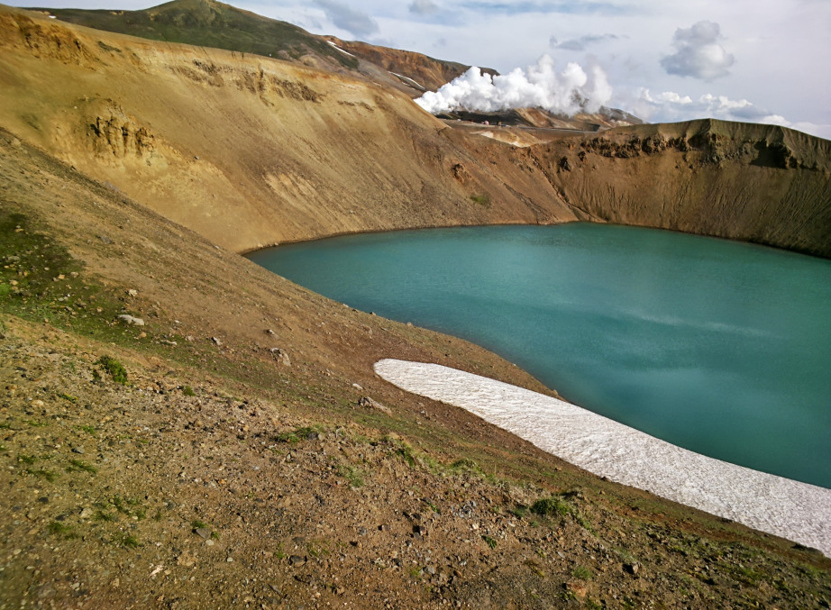 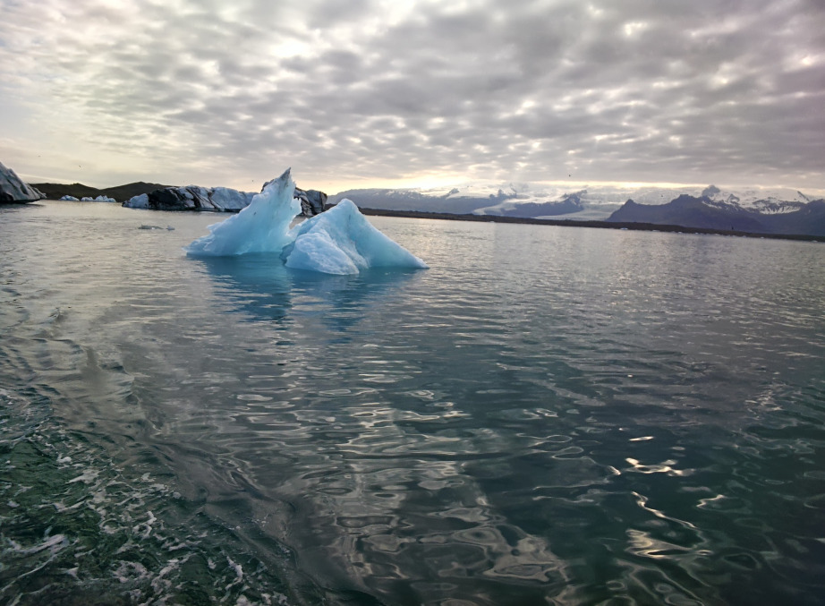 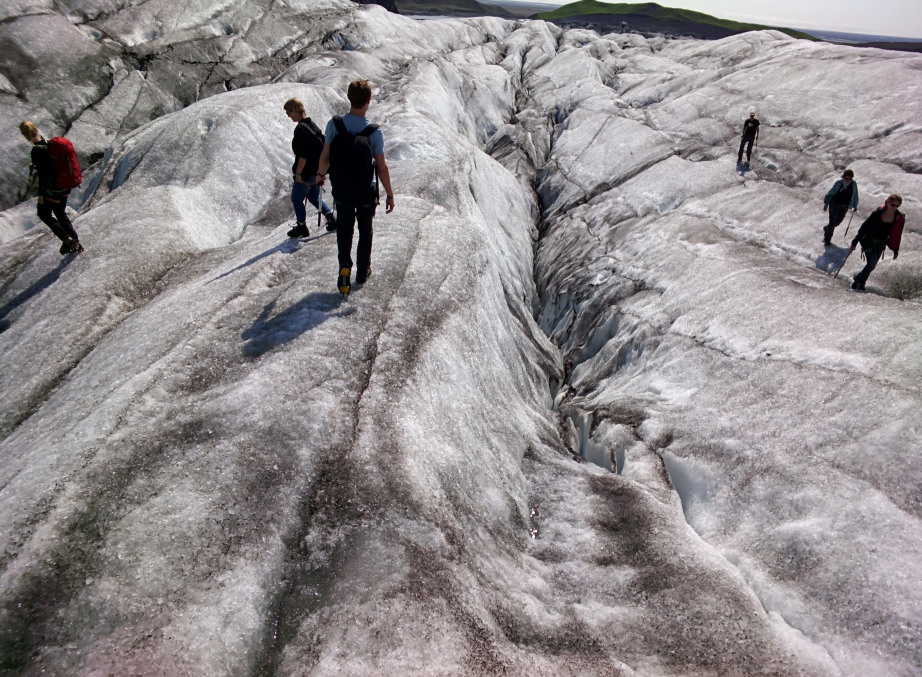 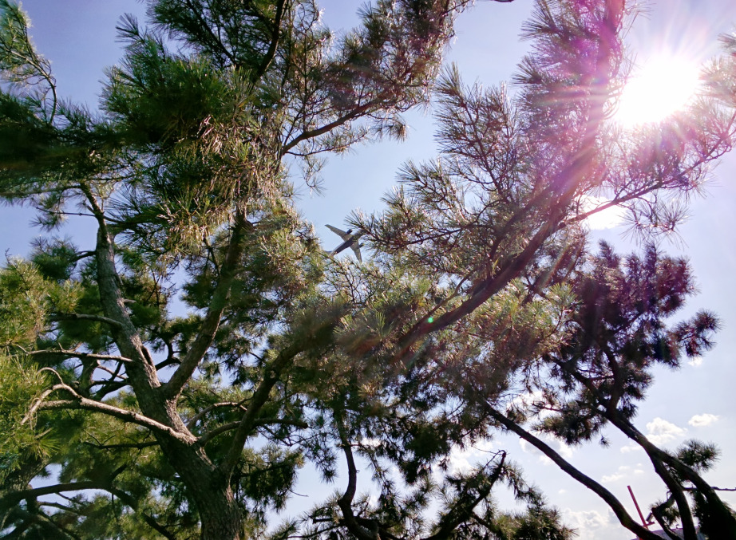Automattic is almost synonymous with its flagship product, WordPress.com. WordPress.com powers 33 million blogs and the news sites of organizations such as CNN and Time. Collectively, the network is the seventh most popular site on the Internet. A few months after Google Glass was made available to 2,000 “Explorers,” Tumblr, Twitter, and Facebook released sharing-apps for Google Glass. Since there was no app for WordPress.com, we created one and tested it in Iceland. That blog created using this application was featured on WordPress’s front page, Freshly Pressed and resulted in a profile in Pando Daily.
Paul Sieminski, General Counsel of Automattic: “We have a great community of developers creating amazing WordPress plugins. But the folks at Silica Labs not only created new technical functionality, they also used it to share a personal story about a trip through the glaciers and geothermal swamps of Iceland. It caught our attention, considering our company’s mission of democratizing publishing.” 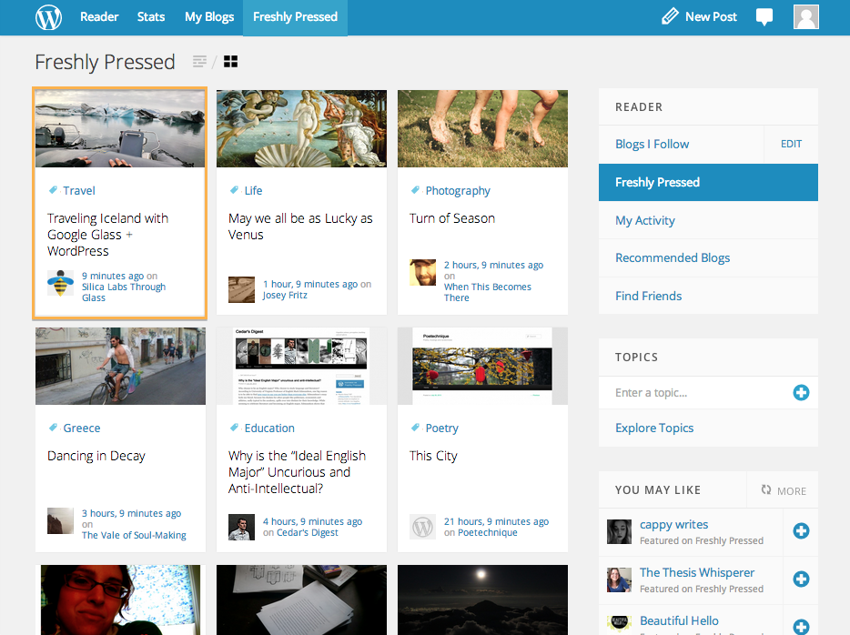